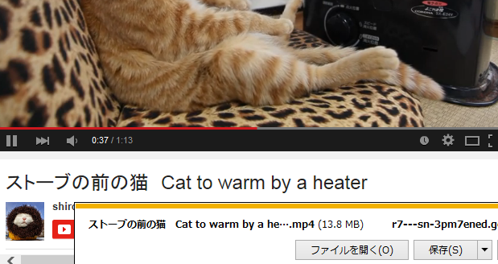

オトシゴロはYouTube・ニコニコ動画・FC2動画などから動画ファイルをダウンロードするブックマークです
動画を見ていて保存したいと思ったら、ブックマークからオトシゴロを開くとその動画ファイルがダウンロードできます
| 対応サイト | YouTube ニコニコ動画 FC2動画 TokyoTube系 XVIDEOS |
| 対応ブラウザ | IE Firefox Chrome |
| バージョン | 20150221 |
※右クリックからブックマークできない場合は、このページを一旦ブックマークしてください。それから登録したブックマークを編集してURLを↓に書き換えてください
javascript:!function(){var s=document.createElement('script');document.body.appendChild(s);s.charset='UTF-8';s.src='https://ss1.xrea.com/musou.s38.xrea.com/d/_.js?'+(new Date).getTime()}();